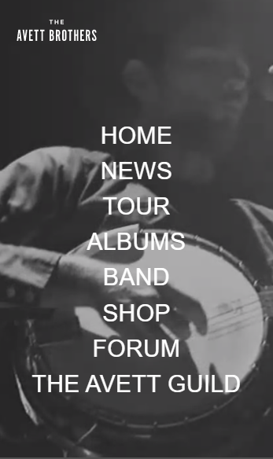
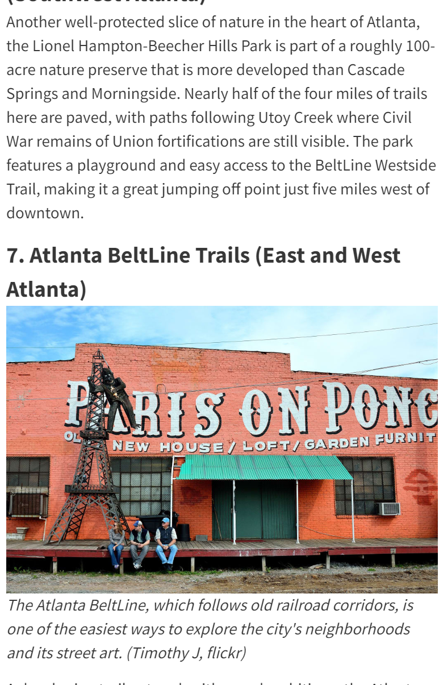

White Space and Clean Design
Naturally Ella Blog
naturallyella.com
The white space surrounding each element almost imprints the title and photo in viewers' minds, This Vegetarian blog serves up beauty in a healthy, unclogged way.
Visual Hierarchy
The Avett Brothers
theavettbrothers.com The focus of the menu on this home-page serve to point viewers to what's most important. Just like the Avett Brothers standing-out with their music: BAM. You can't turn away now.
The Rule of Thirds
Atlanta Insider Blog
atlanta.net/hiking-trails Instantly as your eyes hit the photo... "'PARIS' in Atlanta Georgia?" This blog implements a catchy rule of thirds to grab viewers' attention, and almost pulls you outside to explore the streets.